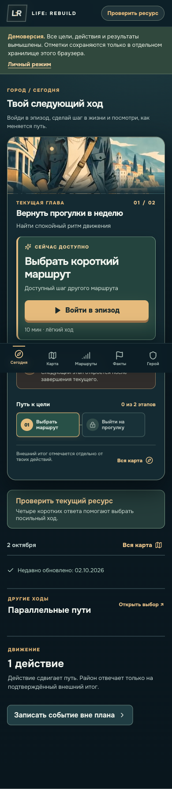

KadrLine
From HR risk assessment to a traceable operations handoff.
Ivan Epifanov. I define the problem, design the workflow, direct AI-assisted delivery and verify what actually works.
Explore selected work01 / Selected systems
Different products, one discipline: make the next action visible and test the complete flow.
From HR risk assessment to a traceable operations handoff.
A life navigation product that separates activity from real-world outcomes.

A controlled workflow for discovery, deduplication, fit review, application records and follow-up. The public case uses synthetic examples and does not expose employer correspondence.
02 / How I work
Find the user, the bottleneck and the next observable outcome. Set scope before choosing technology.
Translate decisions into requirements and bounded tasks for Codex and other tools. Review artifacts, edge cases and data boundaries.
Test a real user path, inspect the interface, check deployment and distinguish technical readiness from business impact.
I use AI agents as implementation partners. I retain responsibility for product direction, requirements, test criteria and acceptance. Case studies name what was generated, checked and still unverified.
03 / Background
My foundation is HR and operating process work: translating messy requests into responsibilities, documents, deadlines and decisions. I now apply that discipline to digital products and AI-assisted implementation.
HR Director. Unified HR processes across five production sites, coordinated a five-person team and created a role-based learning portal.
HR Manager → HR Director. Restored personnel records across 13 legal entities and introduced Bitrix24 for tasks, HR processes and internal communication.
Head of HR. Set up personnel processes for a new 70-person complex, including time and payroll workflows in 1C:ZUP and electronic documents.
04 / Contact
Open to Operations, Implementation, Product Operations and HRTech roles.
View GitHub profile ↗For a direct introduction, use the contact channel shared with my application.